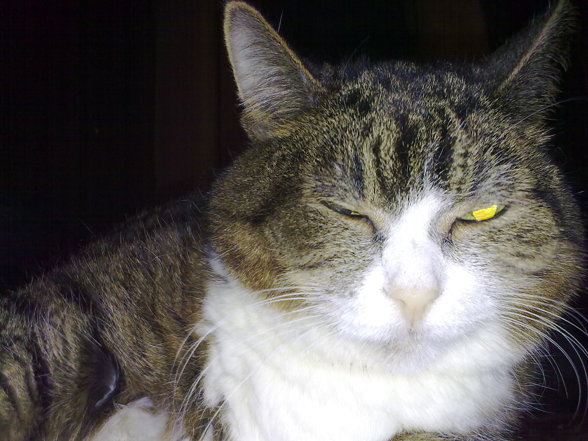
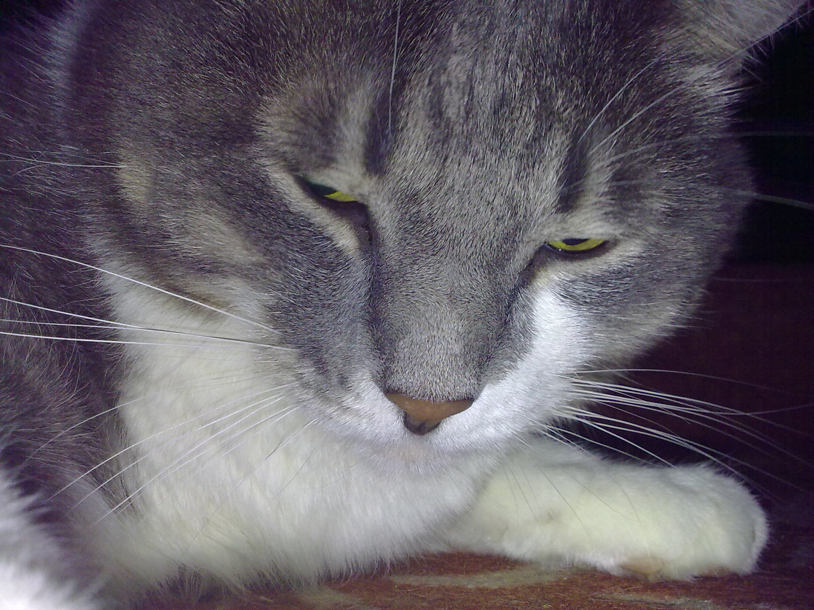
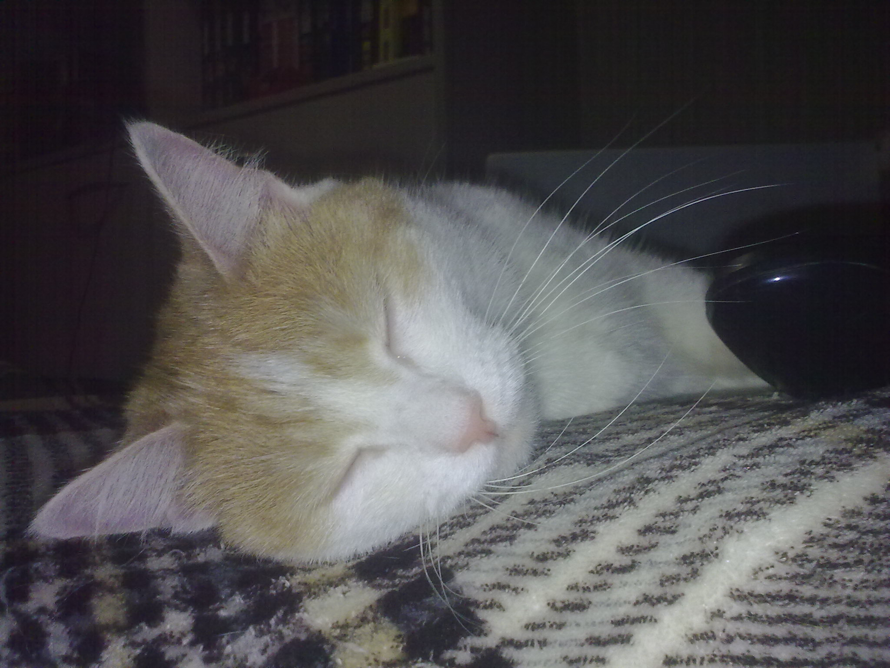

Наверное так оно и есть. Во всяком случае, частично.
Но вообще-то автор уже, так сказать, в весьма зрелом, возрасте. Уже даже на пенсии.
Однако, выдумывать и сочинять, начал в детстве: когда учился в третьем классе, даже в журнале был опубликован маленький рассказ о нашем коте, вытащенным мной на улице из грязной и глубокой ямы.
 | Чернющий котофеич Тёпа, вытащенный мной где-то на улице из глубокой грязной ямы; |
|  | Котейка Машуля, отданная мне, тогда уже инженеру ВПК, в троллейбусе нашедшими её ещё слепым котёнком какими-то, совсем незнакомыми детьми, боявшимся нести её к себе домой и опасавшимися, что котёнка вновь выкинут. Выкормленная мною молоком из пипетки; |
|  | Котя Баксик, найденный мной, школьником уже старших классов, на улице; |
|  | Котейка Алиска, переданная мне по просьбе друзей с Украины. |